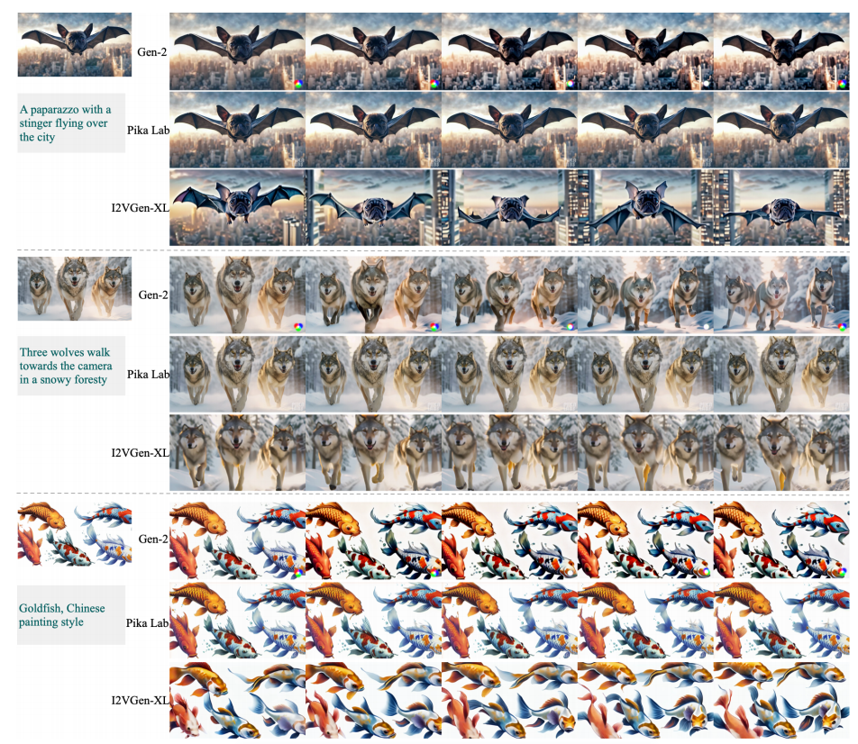

I2VGen-XL
I2VGen-XL: High-Quality Image-to-Video Synthesis via Cascaded Diffusion Models
阅读时间：2023-11-10
阅读目的：阿里出的开源视频生成模型，看看和腾讯的有什么不同
我的看法
如何建立高质量的T2V模型？
作者其实给出了一种解法，由于缺乏高质量的文本-视频对，因此实现视频文本对齐比图像文本对齐要难很多。因此专注建立I2V模型，以T2I + I2V 的形式实现T2V是一个很好的解法。因为现有的图像生成技术（SD）比较成熟，可以生成高质量的图像，且可控性更好。
顺着这种思路，显而易见的，I2V模型的核心就是让”图像动起来”。
为了让图像动起来的视频更真实，论文设计了一个二阶段级联模型，从两个角度分别解决语义一致性和时空连续性。
除了这些观点，论文其实还揭示了一些现象，而这些现象可能就是值得解决的问题：
- 图像语义的保持程度和运动强度之间呈现出一定的权衡关系
Gen2的动作幅度很小，所以想要生成真实的长视频，运动幅度其实是一个痛点。可能需要引入一些其他技术，比如光流？ - 使用VQGAN做图像结构和细节提取，CLIP做语义提取，然后融合。这种技术还可以用在图像生成领域的Inversion问题上（P+）
- 基础阶段其实就可以生成大体看起来像那么回事的模型，但是细致看就不行了。或许SDEdit相关的，基础 + 优化的结构才是解决细致问题更有效的方法（相较于直接在一个模型上拔高参数量）
- 细化模型的作用是保留低频分量，增强高频分量，减少中频分量，低频主要是图像细节，高频是边缘和噪声。而伪影主要存在于中频
Abstract
扩散模型在视频生成领域的应用发展很快，但是语义准确性、视频清晰度和时空连续性一直面临一些问题。视频数据结构复杂、缺少对齐良好的文本视频对，使得模型难以产出高质量且符合语义视频
这篇文章提出了一种叫I2VGen-XL的方法，通过解耦这两个因素增强模型性能，并且通过静态图像作为重要指导，确保输入图像数据对齐。算法包括两个阶段：
- 基础阶段有两个encoder，一个用来保证生成对象的语义连贯性，另一个用来保留输入图像内容
- 精炼阶段通过加入额外的简短文本来增强视频的细节，并将分辨率提高到1280 * 720
文章总共使用了3500w个文本视频对和60亿个文本图像对来优化模型
Introduction
扩散模型在图像生成领域效果显著，使得视频生成技术也取得重大进步，但在空间一致、语义一致、视频的细节连续性上仍然存在很大不足
目前有两种解决方法：
- 多个模型级联来逐步提高视频质量，例如Imagen video。这种方法主要在每个阶段使用相同的输入来优化目标，没有明确的解耦，因此导致在每个阶段学习相似的分布，生成的视频中会产生不可忽视的噪声
- 引入额外的指导和训练过程，例如Codef和Videocomposer。目前取得了不错的成果，但是因为缺乏充分对齐的文本-视频对，所以发展较慢
I2VGen XL首先通过利用单个静态图像作为主要条件来减少对对齐良好的文本-视频对的依赖，具体分为两个阶段：
- 基础阶段旨在确保低分辨率生成视频的语义一致性，同时保留输入图像的内容和身份信息
通过一个CLIP编码器（语义） + 一个可学习的编码器（内容） 实现，分别提取高级语义和低级细节，然后将其合并到视频扩散模型中 - 精炼阶段是将视频分辨率提高到1280×720，并精炼生成视频中存在的细节和伪影
用一个简单的文本作为输入来训练一个独特的视频扩散模型，优化最初的600个去噪步骤。通过去噪，从低分辨率视频中生成具有时间和空间相关性性的高清晰度视频
文章总共使用了3500w个文本视频对和60亿个文本图像对来优化模型
Related Works
原文是从扩散模型，图像生成，视频生成三个子标题展开的，我归纳如下：
上游任务：DDPM，DDIM等采样器，解决扩散模型耗时等基础问题
中游任务：各种视频生成模型（大模型）
下游任务：研究可控性（composer 和 controlnet）
I2VGen-XL
I2VGen XL的目的是从静态图像生成高质量的视频。因此，它需要实现两个关键目标
1. 语义一致性，即准确预测图像中的意图，然后生成精确的运动，同时保持输入图像的内容和结构
2. 高时空连贯性和清晰度，这是视频的基本属性
这两个问题分别通过基础阶段和细化阶段解决，框架图如下：
Base stage（基础阶段）
基于VLDM训练了一个低分辨率模型，聚焦语义和细节学习
- High-level semantics learning
CLIP可以提取语义信息，但是它只能学习高级语义，会忽视参考图像中提供的细节信息，因此还需要引入一个保留图像结构和细节的encoder - Low-level details
为了减轻细节损失，可以从VQGAN的encoder（D.Enc）提取特征并添加到第一帧的输入噪声中。做出这样的选择是基于encoder完全重建原始图像的能力，实验证明使用local encoder可以比其他复杂的语义编辑器更好的保存图像内容，但是随着video的播放，图像畸变会更显著。即语义信息变弱，这与CLIP形成互补
Refinement stage（提纯阶段）
在基础模型可以得到语义准确的低分辨率视频。但是面临噪声、时间和空间抖动变形的问题。因此精炼阶段的任务目标是：
- 提高视频分辨率，从448 256到1280 720
- 提高时空连续性，解决伪影问题
为了达成目标，训练了一个单独的VLDM，专门处理高质量、高分辨率的数据。在第一阶段生成视频的基础上使用SDEdit方法、
精炼模型与基本模型不同，使用用户提供的简单文本（比如几个单词）作为条件，而不是使用参考图像，因为当两阶段输入条件相同时，实验发现视频矫正的有效性显著降低，可能是因为引入了类似的映射削弱了模型的恢复能力，
总的来说，先使用CLIP对文本进行编码，并通过cross-attention注入3D Unet，再基于基础阶段的模型，使用高质量video训练一个high-resolution模型
Train and Inference
- 基础模型：使用SD2.1的预训练参数初始化3D Unet，使I2VGen-XL具有初始的空间生成能力。然后再进行训练，空间层的参数更新通过一个系数γ = 0.2控制，这个系数按比例缩小
- 精炼模型：使用基础模型的参数初始化，然后采用相同的训练方法。为了提高模型的时空建模能力，专门再初始噪声图上采用两阶段进行训练。
（1）再整个high-resolution数据集上训练
（2）对精挑细选的100w个高质量视频子集进行一轮微调
在图像生成过程中，使用去噪过程连接两个模型（类似SD2.1）。根据生成效率、生成质量以及分辨率的不同，采用DDIM和DPMsolver++
在基础模型运行结束后，将视频resize到1280 * 720，执行DDIM去噪的反向过程，再使用精炼模型去噪来获得最终的high-resolution视频，公式如下：
$c_i$ 和$c_t$ 分别表示输入的参考图像和文本prompt，$\epsilon_{θ,i}$ 和 $\epsilon_{θ,t}$ 分别表示基础模型和精炼模型的去噪过程
Experiments
数据集
- WebVid10M
- LAION-400M
- 其他相同类型的视频文本对和图像文本对构成的私有数据集
参数
优化器：AdamW，固定学习率
使用1:1:1:5的比例提供1、8、16、32帧的视频
使用1:2:4:1的比例提供1、4、8、16FPS的视频
即，当FPS=1时，输入的是静态图像
对于基础模型：使用中心裁剪得到H=256，W=448的视频
对于精炼模型：使用中心裁剪得到H=720，W=1280的视频
模型对比情况
I2VGen-XL和现在最强的Gen2和Pika对比，分别生成三种视频（伪现实，现实，抽象）。优点运动性更好（Gen2和Pika用过的都知道，生成的虽然说是视频，但其实更接近静态图像），输入图像仍然会丢失一些细节。另外实验中还发现，图像语义的保持程度和运动强度之间呈现出一定的权衡关系（运动幅度大了，自然结构就不容易保持）

消融实验
精炼前后生成的视频差别：一眼看过去好像差别不大，但细节差距很大，比如更精致的面部和身体特征 （商用的要求）。这说明精炼后的模型空间特征的提取和表达显著增强
定性分析
生成稳定的人体运动仍然是视频合成中的一个主要挑战。论文还专门验证了I2VGen XL在人体图像上的稳健性